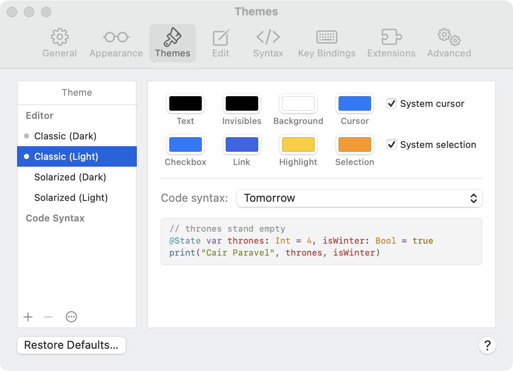

To open these settings, choose Edmund > Settings, then click Themes.

There are two kinds of theme:
Click an editor theme in the list. It becomes the theme for its appearance, light or dark, and a dot appears next to it. The other appearance keeps its own theme.
To change the code colors that go with an editor theme, select the editor theme, then choose from the Code syntax pop-up menu.
Changes save as you make them. You can also change a built-in theme; to undo your changes, click Restore Defaults.
To rename, duplicate, or delete a theme, Control-click it in the list, or use the ⋯ menu below the list. You can’t delete a built-in theme.
Themes are JSON files. To use a theme someone gave you, choose Import from the ⋯ menu. To give one away, select it and choose Export. To see the files in the Finder, choose Show in Finder.
Click Restore Defaults, then choose whether to restore the selected theme or every built-in theme. Themes you made yourself aren’t changed.